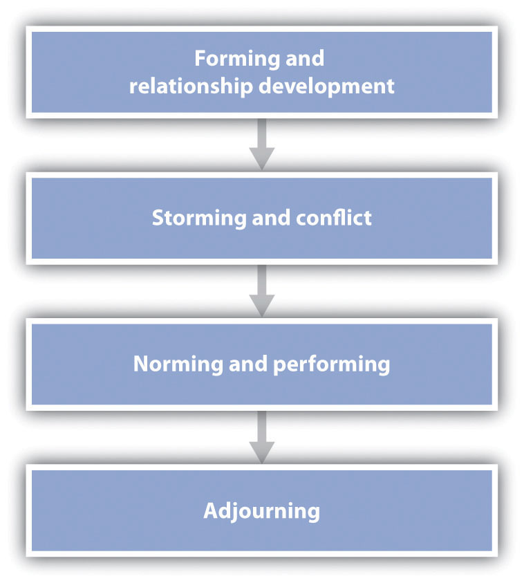

Although it might seem that we could easily recognize a social group when we come across one, it is actually not that easy to define what makes a group of people a social group. Imagine, for instance, a half dozen people waiting in a checkout line at a supermarket. You would probably agree that this set of individuals should not be considered a social group because the people are not meaningfully related to each other. And the individuals watching a movie at a theater or those attending a large lecture class might also be considered simply as individuals who are in the same place at the same time but who are not connected as a social group.
Of course, a group of individuals who are currently in the same place may nevertheless easily turn into a social group if something happens that brings them “together.” For instance, if a man in the checkout line of the supermarket suddenly collapsed on the floor, it is likely that the others around him would quickly begin to work together to help him. Someone would call an ambulance, another might give CPR, and another might attempt to contact his family. Similarly, if the movie theater were to catch on fire, a group would quickly form as the individuals attempted to leave the theater. And even the class of students might come to feel like a group if the instructor continually praised it for being the best (or the worst) class that she has ever had. It has been a challenge to characterize what the “something” is that makes a group a group, but one term that has been used is entitativity (Campbell, 1958; Lickel et al., 2000).Campbell, D. T. (1958). Common fate, similarity and other indices of the status of aggregate persons as social entities. Behavioral Science, 3, 14–25; Lickel, B., Hamilton, D. L., Wieczorkowska, G., Lewis, A., Sherman, S. J., & Uhles, A. N. (2000). Varieties of groups and the perception of group entitativity. Journal of Personality and Social Psychology, 78(2), 223–246. EntitativityThe perception, either by the group members themselves or by others, that the individuals are a group. refers to something like “groupiness”—the perception, either by the group members themselves or by others, that the people together are a group.
One determinant of entitativity is a cognitive one—the perception of similarity. A group can only be a group to the extent that its members have something in common; at minimum, they are similar because they all belong to the group. If a collection of people are interested in the same things, share the same opinions and beliefs, or work together on the same task, then it seems they should be considered—by both themselves and others—to be a group. However, if there are a lot of differences among the individuals, particularly in their values, beliefs, and behaviors, then they are not likely to be seen as a group.
People generally get together to form groups precisely because they are similar—they are all interested in playing poker, listening to rock and roll, or passing a chemistry test. And groups tend to fall apart because the group members become dissimilar and thus no longer have enough in common to keep them together (Crump, Hamilton, Sherman, Lickel, & Thakkar, 2010; Miles & Kivlighan, 2008).Crump, S. A., Hamilton, D. L., Sherman, S. J., Lickel, B., & Thakkar, V. (2010). Group entitativity and similarity: Their differing patterns in perceptions of groups. European Journal of Social Psychology, 40(7), 1212–1230. doi: 10.1002/ejsp.716; Miles, J. R., & Kivlighan, D. M., Jr. (2008). Team cognition in group interventions: The relation between coleaders’ shared mental models and group climate. Group Dynamics: Theory, Research, and Practice, 12(3), 191–209. doi: 10.1037/1089–2699.12.3.191
Although similarity is critical, it is not the only factor that creates a group. Groups have more entitativity when the group members have frequent interaction and communication with each other. Although communication can occur in groups that meet together in a single place, it can also occur among individuals who are at great distances from each other. The members of a research team who communicate regularly via Skype, for instance, might have frequent interactions and feel as if they are a group even though they never or rarely meet in person.
Interaction is particularly important when it is accompanied by interdependence—the extent to which the group members are mutually dependent upon each other to reach a goal. In some cases, and particularly in working groups, interdependence involves the need to work together to successfully accomplish a task. Individuals playing baseball are dependent upon each other to be able to play the game and also to play well. Each individual must do his or her job in order for the group to function. And we are also interdependent when we work together to write a research article or create a class project. When group members are interdependent, they report liking each other more, tend to cooperate and communicate with each other to a greater extent, and may be more productive (Deutsch, 1949).Deutsch, M. (1949). An experimental study of the effects of cooperation and competition upon group processes. Human Relations, 2, 199–231.
Still another aspect of working groups whose members spend some time working together and that makes them seem “groupy” is that they develop group structure—the stable norms and roles that define the appropriate behaviors for the group as a whole and for each of the members. The relevant social norms for groups include customs, traditions, standards, and rules, as well as the general values of the group. These norms tell the group members what to do to be good group members and give the group more entitativity. Effective groups also develop and assign social roles (the expected behaviors) to group members. For instance, some groups may be structured such that they have a president, a secretary, and many different working committees.
Although cognitive factors such as perceived similarity, communication, interdependence, and structure are part of what we mean by being a group, they do not seem to be sufficient. Groups may be seen as groups even if they have little independence, communication, or structure. Partly because of this difficulty, an alternative approach to thinking about groups, and one that has been very important in social psychology, makes use of the affective feelings that we have toward the groups that we belong to. Social identity refers to the part of the self-concept that results from our membership in social groups (Hogg, 2003).Hogg, M. A. (2003). Social identity. In M. R. Leary & J. P. Tangney (Eds.), Handbook of self and identity (pp. 462–479). New York, NY: Guilford Press. Generally, because we prefer to remain in groups that we feel good about, the outcome of group membership is a positive social identity—our group memberships make us feel good about ourselves.
According to the social identity approach, a group is a group when the members experience social identity—when they define themselves in part by the group that they belong to and feel good about their group membership (Hogg, 2003, 2010).Hogg, M. A. (2003). Social identity. In M. R. Leary & J. P. Tangney (Eds.), Handbook of self and identity (pp. 462–479). New York, NY: Guilford Press; Hogg, M. A. (2010). Human groups, social categories, and collective self: Social identity and the management of self-uncertainty. In R. M. Arkin, K. C. Oleson, & P. J. Carroll (Eds.), Handbook of the uncertain self (pp. 401–420). New York, NY: Psychology Press. This identity might be seen as a tendency on the part of the individual to talk positively about the group to others, a general enjoyment of being part of the group, and a feeling of pride that comes from group membership. Because identity is such an important part of group membership, we may attempt to create it to make ourselves feel good, both about our group and about ourselves. Perhaps you know some people—maybe you are one—who wear the clothes of their crowd or school to highlight their identity with the group because they want to be part of, and accepted by, the other group members.
Although many groups are basically static, performing the same types of tasks day in and day out, other groups are more dynamic. In fact, in almost all groups there is at least some change; members come and go, and the goals of the group may change. And even groups that have remained relatively stable for long periods of time may suddenly make dramatic changes, for instance, when they face a crisis, such as a change in task goals or the loss of a leader. Groups may also lose their meaning and identity as they successfully meet the goals they initially set out to accomplish.
One way to understand group development is to consider the potential stages that groups generally go through. As you can see in Figure 11.1 "Stages of Group Development", the stages involve forming, storming, norming and performing, and adjourning. The group formation stage occurs when the members of the group come together and begin their existence as a group. In some cases, when a new group, such as a courtroom jury, forms to accomplish a goal, the formation stage occurs relatively quickly and is appropriately considered the group’s first stage. In other cases, however, the process of group formation occurs continually over a long period of time, such as when factory workers leave their jobs and are replaced by new employees, or when a fraternity or sorority recruits new members every year to replace the old ones who leave at the end of the school year.
Figure 11.1 Stages of Group Development
This figure represents a general model of the phases of group development, beginning with group formation and ending with adjournment. It should be kept in mind, however, that the stages are not necessarily sequential, nor do all groups necessarily pass through all stages.
The development stage is important for the new members as well as for the group itself. During this time, the group and the individual will exchange knowledge about appropriate norms, including the existing group structures, procedures, and routines. The individual will need to learn about the group and determine how he or she is going to fit in. And the group may be inspecting the individual’s characteristics and appropriateness as a group member. This initial investigation process may end up with the individual rejecting the group or the group rejecting the individual.
If the group formation stage can be compared to childhood, there is no doubt that the next stage—storming—can be compared to adolescence. As the group members begin to get to know each other, they may find that they don’t always agree on everything. In this stage, members may attempt to make their own views known, expressing their independence and attempting to persuade the group to accept their ideas. Storming may occur as the group first gets started, and it may recur at any point during the group’s development, particularly if the group experiences stress caused by a negative event, such as a setback in progress toward the group goal. In some cases, the conflict may be so strong that the group members decide that the group is not working at all and they disband. In fact, field studies of real working groups have shown that a large percentage of new groups never get past the forming and storming stages before breaking up (Kuypers, Davies, & Hazewinkel, 1986).Kuypers, B. C., Davies, D., & Hazewinkel, A. (1986). Developmental patterns in self-analytic groups. Human Relations, 39(9), 793–815.
Although storming can be harmful to group functioning and thus groups must work to keep it from escalating, some conflict among group members may in fact be helpful to the group. Sometimes the most successful groups are those that have successfully passed through a storming stage, because conflict may increase the productivity of the group, unless the conflict becomes so extreme that the group disbands prematurely (Rispens & Jehn, 2011).Rispens, S., & Jehn, K. A. (2011). Conflict in workgroups: Constructive, destructive, and asymmetric conflict. In D. De Cremer, R. van Dick, & J. K. Murnighan (Eds.), Social psychology and organizations (pp. 185–209). New York, NY: Routledge/Taylor & Francis Group. Groups that experience no conflict at all may be unproductive because the members are bored, uninvolved, and unmotivated, and because they do not think creatively or openly about the topics of relevance to them. In order to progress, the group needs to develop new ideas and approaches, and this requires that the members discuss their different opinions about the decisions that the group needs to make.
Assuming that the storming does not escalate too far, the group will move into a stage in which the appropriate norms and roles for the group are developed, allowing the group to establish a routine and effectively work together. At this stage—the norming and performing stage—the individual group members may report great satisfaction and identification with the group, as well as strong group identity. Groups that have effectively reached this stage have the ability to meet goals and survive challenges. And at this point, the group becomes well tuned to its task and is able to perform the task efficiently.
In one interesting observational study of the group development process in real groups, Gersick (1988, 1989)Gersick, C. J. (1988). Time and transition in work teams: Toward a new model of group development. Academy of Management Journal, 31(1), 9–41; Gersick, C. (1989). Marking time: Predictable transitions in task groups. Academy of Management Journal, 32, 274–309. observed a number of teams as they worked on different projects. The teams were selected such that they were all working within a specific time frame, but the time frame itself varied dramatically—from 8 to 25 meetings held over periods ranging from 11 days to 6 months. Despite this variability, Gersick found that each of the teams followed a very similar pattern of norming and performing. In each case, the team established well-defined norms regarding its method of attacking its task in its very first meeting. And each team stayed with this approach, with very little deviation, during the first half of the time it had been allotted. However, midway through the time it had been given to complete the project (and regardless of whether that was after 4 meetings or after 12), the group suddenly had a meeting in which it decided to change its approach. Then, each of the groups used this new method of performing the task during the rest of its allotted time. It was as if a sort of alarm clock went off at the halfway point, which led each group to rethink its approach.
Most groups eventually come to an end—the adjournment stage. In some cases, this is because the task for which the group was formed has been completed, whereas in other cases, it occurs because the group members have developed new interests outside the group. In any case, because people who have worked in a group have likely developed a strong identification with the group and the other group members, the adjournment phase is frequently stressful, and participants may resist the breakup. Faced with these situations, individuals frequently plan to get together again in the future, exchanging addresses and phone numbers, even though they may well know that it is unlikely they will actually do so. Sometimes it is useful for the group to work ahead of time to prepare members for the breakup.